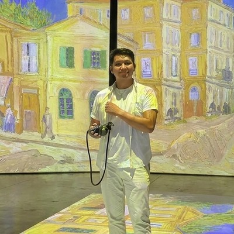

The thread connecting jQuery UI, Chrome DevTools, Google for Creators, and now Impeccable: each time, a technology shift was happening and the tools hadn't caught up yet. — Paul Bakaus

About Gaia · Plate I
Marcus B. Tiongson
Founder & Maintainer of Gaia, the open, evidence-backed atlas of agent capabilities.
I built this because skills should be attributed to the people who proved them. Permanently, not just until the repo goes private.
IIOn the Record Today
A registry, not a marketplace.
- Generic refs
- 228
- Origin skills
- 68
- Contributors
- 42
- Ultimates
- 6
- Evidence entries
- 220
Live from registry/gaia.json v4.1.2. Counts grow with the record.
Gaia is a registry, not a marketplace. A marketplace asks what you can use. A registry asks what's on the record: who demonstrated a capability first, and the evidence that proves it.
Attribution is permanent and public, the way an inventor's name stays on a patent. Everywhere else, skills get shipped and forgotten. Here they don't.
IIIWhat Makes It Last
Built so the record outlives the repo.
Four guarantees the record makes to anyone reading it.
- Every change is on the record.
- A timeline event is written for every rank change, fusion, and evidence update. No silent edits: the build fails if the timeline can't explain a skill's rank.
- The schema is open and forkable.
registry/gaia.jsonis public, with a published JSON schema. If this repo goes dark, anyone can fork and re-host the record.- Every name traces back to a commit.
- Each origin skill ties a handle to a real commit history. The people on the record have a reason to keep it accurate.
- Versioned and locked.
- Every change ships in a versioned release. A pre-commit hook keeps four manifests in lockstep — no untracked edits.
IVWhy These Names
The tools that taught Gaia what to keep.
These developers don't work on Gaia. Their public tools are part of why it exists. Gaia catalogued each one by evidence, handle attached — their words below, from their own sources.
These skills are my best effort at condensing these fundamentals into repeatable practices, to help you ship the best apps of your career. — Matt Pocock
This is my open source software factory. I use it every day. I'm sharing it because these tools should be available to everyone. — Garry Tan
VPut your work on the record
Bring a repo. Earn a name.
Build skills for agents? Point the CLI at your repo, scan, and push. If the evidence holds, you earn a named entry — your handle, in Honor Red.
# install, then point it at your repo $ gaia init --user <your-handle> $ gaia scan $ gaia appraise $ gaia push # opens a draft batch for review
VIHow I Got Here
A decade across IT, EdTech, and AI.
Mechanical engineer by training. Systems architect by trade. Currently reading for an M.Eng. in AI at UP Diliman, building Gaia in the open in between.
-
2013–2019
B.S. Mechanical Engineering, Cum Laude
University of the Philippines, Diliman
University Scholar. Graduated with honors. Took the licensure exam in 2020 and registered as a Mechanical Engineer with the Philippine PRC.
-
2020–2022
CTO, Academic Gateway EdTech
Quezon City, Philippines
Stood up the EdTech division from zero through the COVID-19 pandemic. Migrated the LMS to the cloud with redundant backups; minimised downtime to 0%. Held pre-pandemic pricing while annual enrolment grew 10×.
-
2022–2024
Chief Product Engineer, AG EdTech
Virtual Classroom Project
Owned the LMS platform integrating Zoom, Google Classroom, EasyLMS, and Wistia. Automated infrastructure for live and async classes; streamlined ops by 60%, cut peak-season cost by 40%.
-
2025
SAP Consultant, Apps & Analytics
GECO Philippines · ServiceNow
ITSM support for tools used by 50K+ sales executives across SAP CRM, Harmony, Gainsight, ONE360. Architected seven internal dashboards that improved SLA response times by up to 80%.
-
2025–Now
M.Eng. in Artificial Intelligence
University of the Philippines, Diliman
Research focus on interpretable ML for systems data. Co-authored an IEEE paper applying Random Forest with SHAP / LIME interpretability to 172K+ national agricultural inventory records (R²=0.916).
-
2026
Founded Gaia Skill Registry
gaiaskilltree.com · open source
An evidence-backed atlas of agent capabilities. Built so the record outlives the repo. You're reading it.
The record is open. Read it.